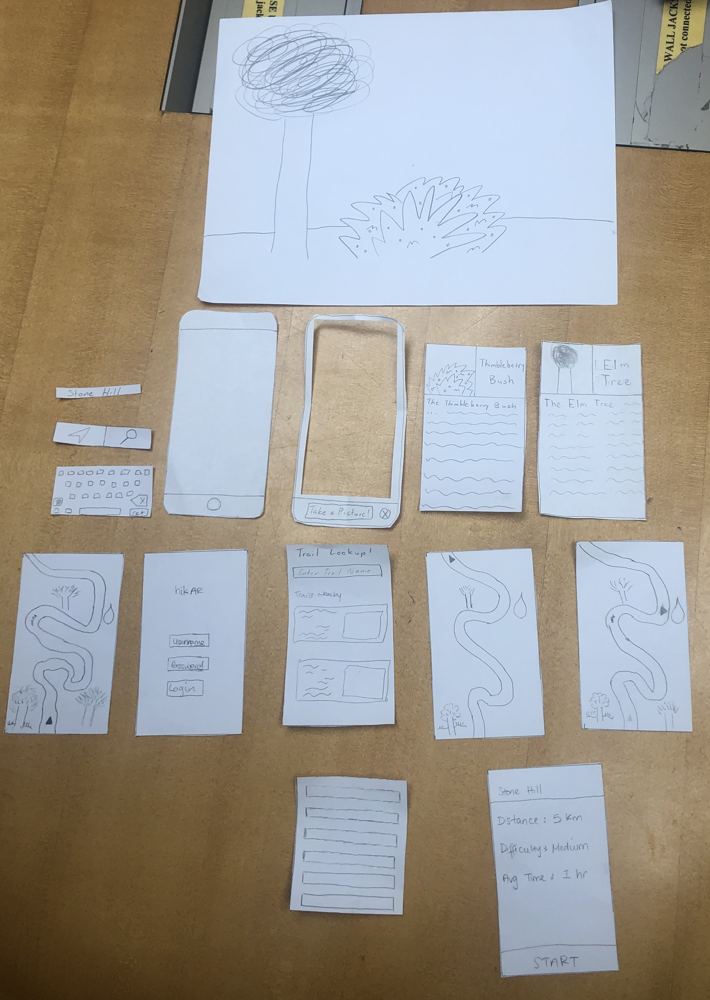
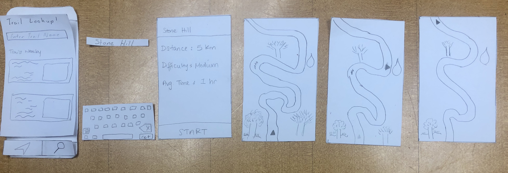
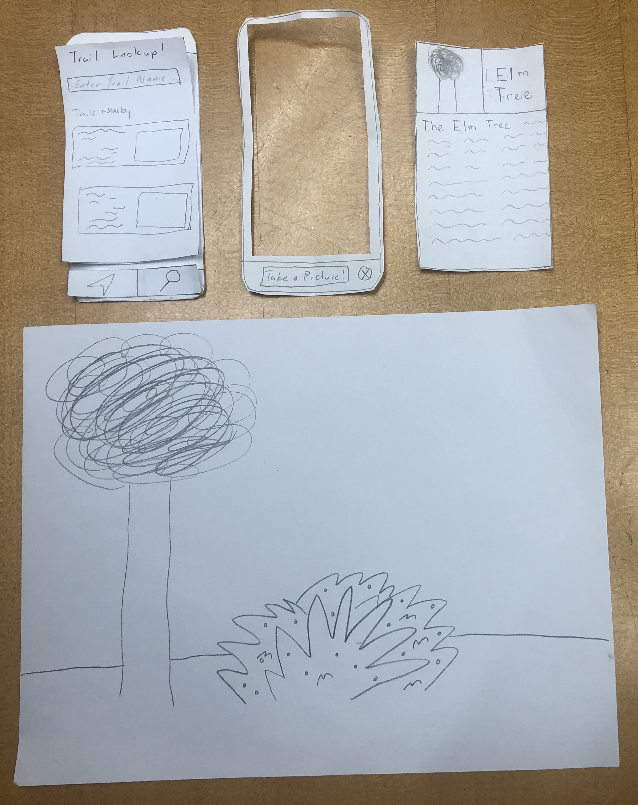

Overview

Our mobile app will start with an opening screen asking them to log/sign in to their accounts. This will allow us to authenticate our users. It will also allow our users to create accounts for features we plan to implement in the future.
Home Screen
After logging in, the user will be brought to the home screen that gives them a list of hikes. There are images for each hike as well as short details and information about the hike. There is also a search bar for users to find hikes. The many ways to find hikes on the home screen allows users to begin the trail navigation task. The icons at the bottom of the screen also allow users to switch to identification mode. This mode can be accessed and navigation can be returned to at any time.
Task One: Navigation

When they select the hike that they want to go on, they will see a screen giving the summary of the hike. This includes the distance of the hike, the difficulty of the hike and the average time that the hike will take. After clicking the start button, it takes the user to the navigation screen where they can see the map and directions of where to go. The navigation gives the user a detailed scene of the environment they are currently in such as showing tree, water and rivers around them. It navigates the user safely to their destination.
Task Two: Identification

When the user taps on the identification button it takes them to the camera page. Here, it allows them to scan their surrounds for wildlife to identify. The camera covers the whole screen so it allows them to get full flexibility when it comes to navigating and really getting the depth of their surroundings. After a picture is taken and the wildlife is identified, a details page comes up. This includes a picture, the name and a description of what is being identified.